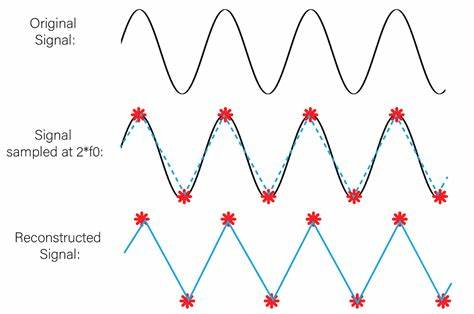

Els diferents microcontroladors tenen en comú els seguents aspectes:
PWM significa modulació de l'ample de banda, en anglès Pulse Width Modulation i és una forma d'aconseguir una sortida analògica a partir de diverses sortides digitals, molt ràpides.
PWM es representa amb el símbol "~" tal com podem veure a la imatge següent d'un Arduino Uno

Més amunt podem veure que els pins números 3, 5, 6, 9, 10 i 11
Aquests PWM són sortides analògiques de 8 bits, en el cas d'Arduino Uno Rev3 d'acord amb el fabricant , mentres en el cas d'Arduino Uno Rev4, és de 12 bits segons el fabricant , que l'anomena DAC, que vol dir Digital Analog Converter
Tenir 8 o 12 bits en un convertidor digital analògic o DAC (Digital Analog Converter) tipus PWM fa que tinguem 28 o 210 nivells diferents de corrent, és a dir, 256 nivells diferents o 2048 nivells diferents
Soposem que tant Arduino uno Rev3 com Rev4 poden donar 5 volts com a màxim. Quina seria la resolució en milivolts de cada Arduino?
5 vols dividit entre 256 dona 0.01953125 volts = 19.53125 milivolts per Arduino Uno Rev3
5 vols dividit entre 2048 dona 0.00244140625 volts = 2.44140625 milivolts per Arduino Uno Rev4
Els milivolts anterior són la resolució que aconseguim. Imaginem que volem regular la intensitat d'un LED amb un Arduino Uno Rev3 aconseguim menys fluid i amb graons més grans, es a dir canvis més bruscs perque 256 canvis són menys que 2048 volts. A continuació veurem una imatge que repreenta com combinant moltes senyals digitals ràpidament sembla que generem un senyal analògic, aixo és la base del PWM.

Quan major és l'amplada del pols vol dir que major és el temps que la sortida digital està en voltatge alt, per exemple 5V i menys temps està a 0V, i per tant el promig de tots els polsos és més alt. En canvi si per exemple si cada pols és més estret a 5V vol dir que estarà més temps a 0V, i per tant el promig de tots els polsos és més baix. A la imatge de a dalt es pot veure com s'encendria un LED o un motor funcionaria a una velocitat del 0%, 25%, 50%, 75%, 100%. Quin percentatge del senyal canviara en un cas i en un altre?
A la taula a continuació veuras els valors per defecte de la freqüència PWM en Arduino Uno Rev3
| PIN de Sortida | Freqüència PWM (Hz) |
|---|---|
| PINS: 3, 9, 10 i 11 | 490 Hz |
| PINS: 5 i 6 | 976 Hz |
Nota: la taula HTML anterior té una capçelera com un document HTML, però és diu thead, en comptes de head i es la primera filera de la taula. Té un cos anomenat tbody, en comptes de body i és la resta de la taula. La taula la defineix el tag table que agrupa thead i tbody. Totes les fileres tant del thead com el tbody es defineixen amb el tag tr, que vol dir table row. Dintre de thead hi ha ellements indivituals que són cel·les que pertanyen a la primera filera i s'anomenen th o table heading. En el table body hi ha també fileres tr però dintre d'aquestes fileres els elements individuals han de ser td, que significa table data. Per últim, s'han de tancar el table o el body. Tots aquest elements es poden modificar amb CSS i fer la taula amb unn estil propi.
Les freqüències baixes proueixen soroll en els motors. Per tant és preferible conectar motors als pins 5 i 6.
La freqüència es la inversa del periode, 976 Hz o cicles per segon corespon a un període de 1/976 segons que és igual a 1,024 milisegons
Apliquem el teorema de Nyquist que diu que hem de fer el dole de mostres com a minim que la freqüencia màxima per aconseguirr convertir en senyal analogic contínu anaògic en un senyal digital mostrejat segons la figura següent
Nyquist és important, perque si en el codi poso una freq¨`encia de mostreig de 20 Hz per un so, no funcionarà, perque la freqüència mínima del so es de 20 Hz i la màxima 20 kHz, pel que es refereix al so audible en humans. Això es per que agafem mostres massa grans, i no opdem veure pujades i baixades de la senyal
A continuació veurem una taula comparativa sobre els micrcontroladors Arduino uno i ESP32S3 i el circuit ADS1115
| Microcontrolador o circuit | Número de bits (nivells) | Voltatge |
|---|---|---|
| Arduino uno | 10 (0-1023) | 0-5V / 0-3.3V |
| ESP32S3 | 12 (0-4095) | 0-3.3V |
| ADS1115 | 16 (0-65536) | 0-3.3V |
int valor_ADC=0;
void setup(){ //9600 en Arduino
Serial_begin(9600); //115200 en S3
}
void loop(){
valor ADC=analogRead(A0) //34 en S3
Serial.println(valorADC); //0-1023
delay(500);} //0-4095